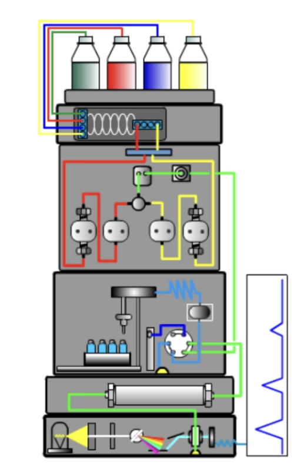

HPLC Run Decision Tool
Set the method targets, then upload CSV or XLSX exports. Each file becomes a trial and receives a next-run recommendation.
Method Specifications
| Target No. Compounds/Peaks | Maximum Run Time (min) | Resolution (Rmin) | Max Back-pressure (psi) |
|---|---|---|---|
Ambient run: Set Temp is 25°C. Measured Temp does not determine whether a run is ambient.
Upload a run
No file selected
Column & Flow Parameters
These bookkeeping values are read from the uploaded run where available.
Inconsistencies Found in Naming: Manually Edit Column & Flow Parameters For accurate data recognition
Trials
| Group No. | Trial No. | Ligand | Column Type | Coreshell | Pore (Å) | C-Load (%) | Length (mm) | ID (mm) | Particle (μm) | Solvent | %B | Flow (mL/min) | Conc. (mg/mL) | Set Temp (°C) | Measured Temp (°C) | Wavelength (nm) | Decision | Actions |
|---|
Current viewed run
Extraction log
Upload a run to see extracted peaks, width thresholds, and calculated values.
HPLC Modules Guide
Choose an HPLC module, then select one of its parameters. The guide explains what it controls, how it can affect retention, selectivity, and efficiency, and whether this decision tool recommends changing it.
